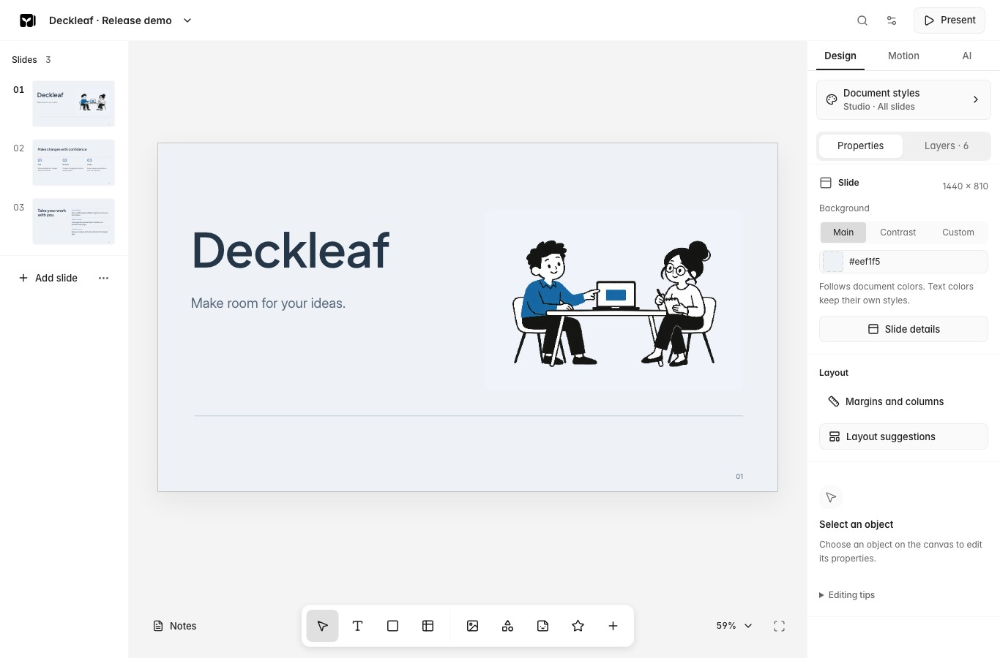

Deckleaf / 五分钟开始
从第一次编辑到导出。
不需要账号或 API key。建议用桌面浏览器编辑，界面目前为英文。

1. 创建文稿
示例会新建三页副本，不替换已有文稿。阅读并关闭导入报告后开始编辑。编辑器首页的 Choose a template 选择模板，Start blank 创建空白文稿。AI 是可选功能。
2. 修改内容
在顶部修改文稿名。选择一页，选中文字并点击 Edit text，或双击文字编辑，点击外部结束。选中对象后使用属性面板；分组对象可能需要再点击一次选择内部对象。
Document menu → Undo 撤销，桌面也可以用 Command/Control+Z。
3. 预览演示
点击 Present，用箭头前进，按 Escape 返回。隐藏页仍可编辑，演示时跳过。
4. 备份与分享
- Deck file：Document menu → Export document → Deck file，下载完整可编辑备份。
- PowerPoint：受支持的可编辑对象，在目标软件复核字体和效果。
- Web page：独立 HTML 演示，包含动效；远程图片和原型可能仍需联网。
- PDF：打开浏览器打印窗口，选择另存为 PDF。
关闭窗口前等待保存提示结束。文稿只保存在当前浏览器，不会自动跨设备同步；清理网站数据前务必导出 Deck 文件。分享前检查备注、隐藏页、来源链接和内嵌媒体。
5. 本地运行
安装 Node.js 22.14 或更新版本与 Git，然后运行：
git clone https://github.com/Ken-pan/deckleaf.git
cd deckleaf
npm ci
npm run dev打开 http://127.0.0.1:4310/ 并保持终端运行。本地文稿、历史和导入原件位于 .data/，停止应用后再备份目录。在线版和本地版的文稿库相互独立。
限制与帮助
PowerPoint 的复杂字体、图表和效果可能发生变化。PDF 以参考画面和文字提取为主。原生 Keynote 转换需要装有 Keynote 的本地 Mac。AI、Figma 和 Google 连接需要自行配置。
打开编辑器